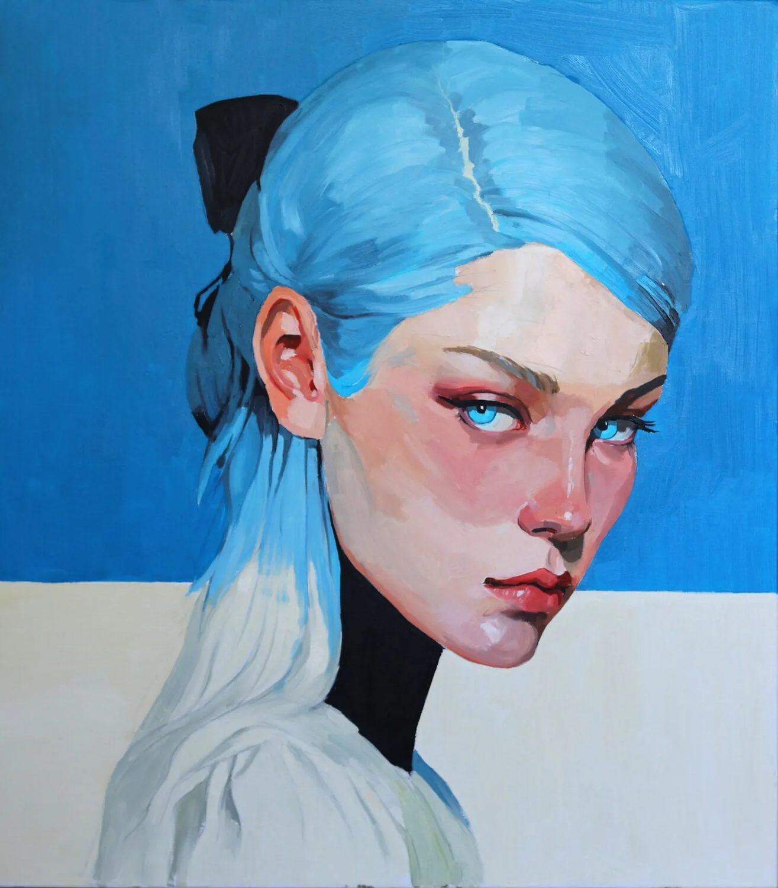
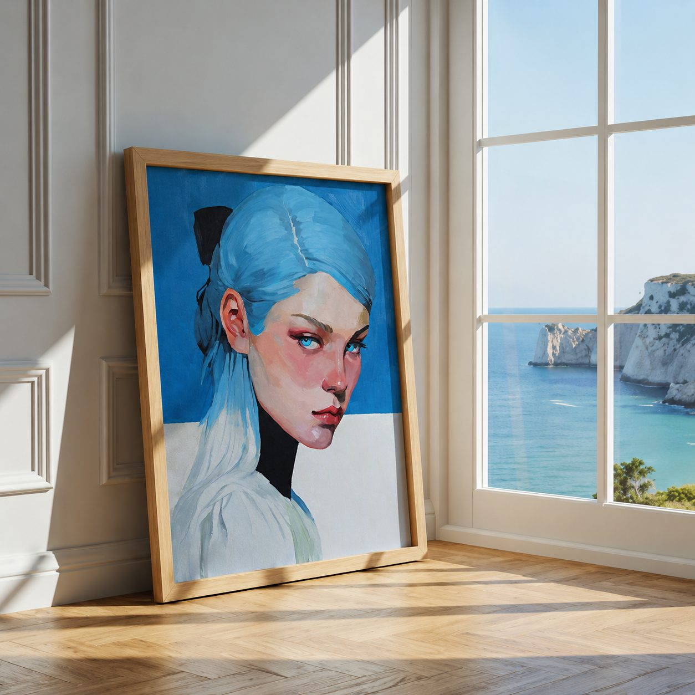
01
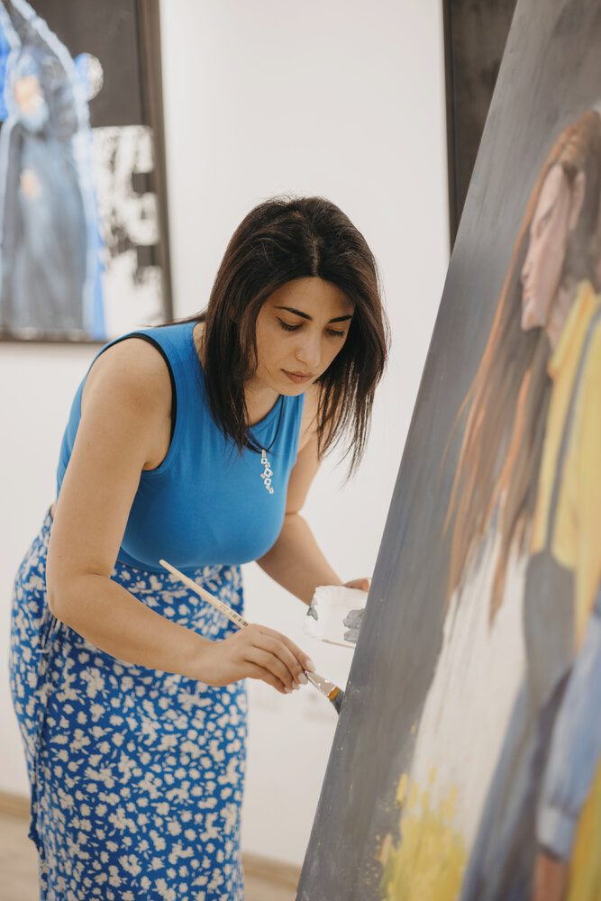
Contemporary painter · Yerevan, Armenia · Working in oil
“I paint the quiet dialogue between the world outside and the world within.”
Selected series — the painting, and the painting at home.


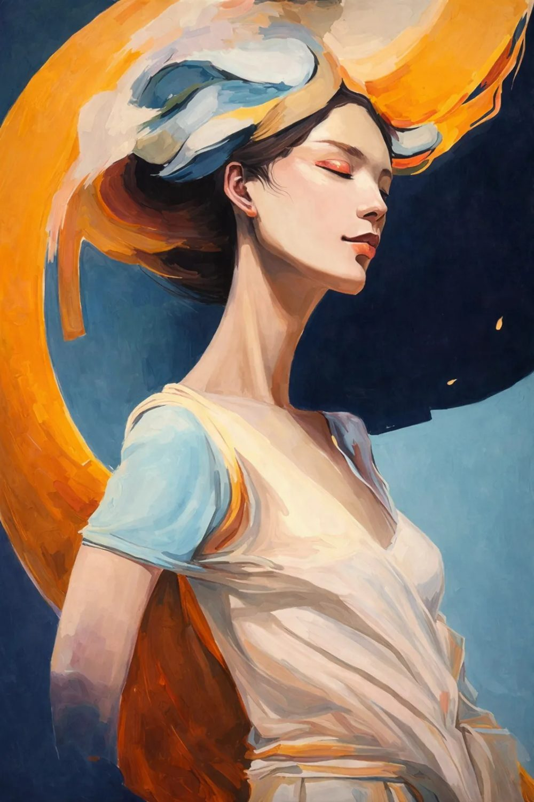
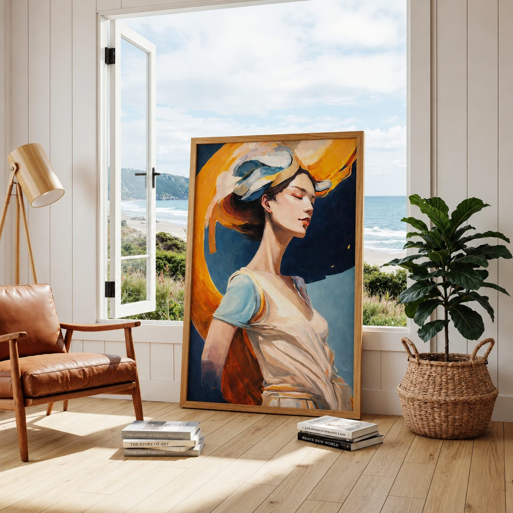
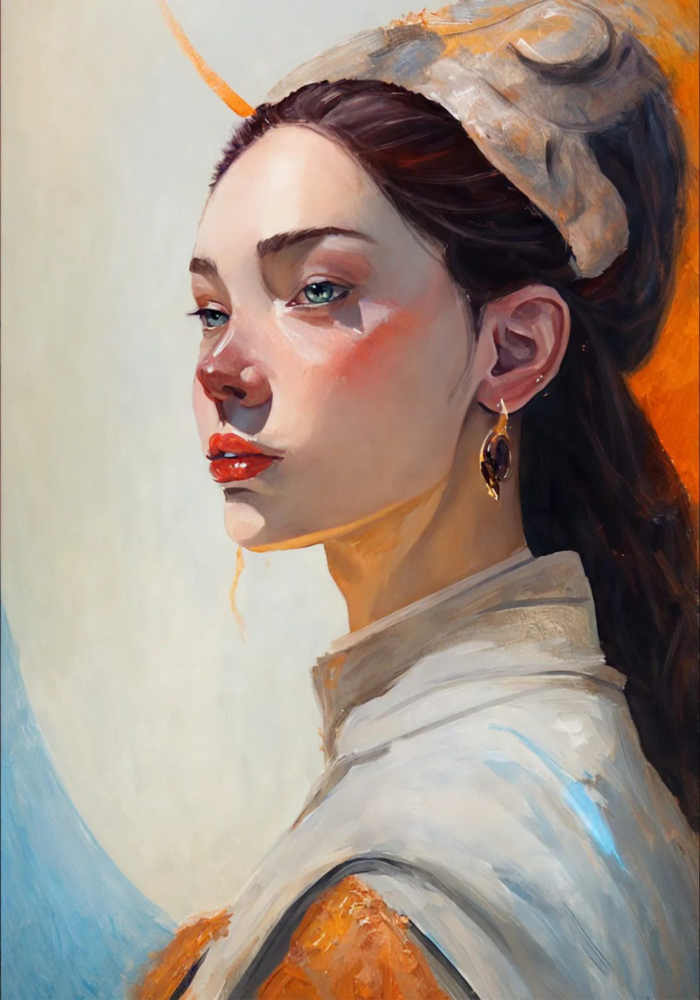
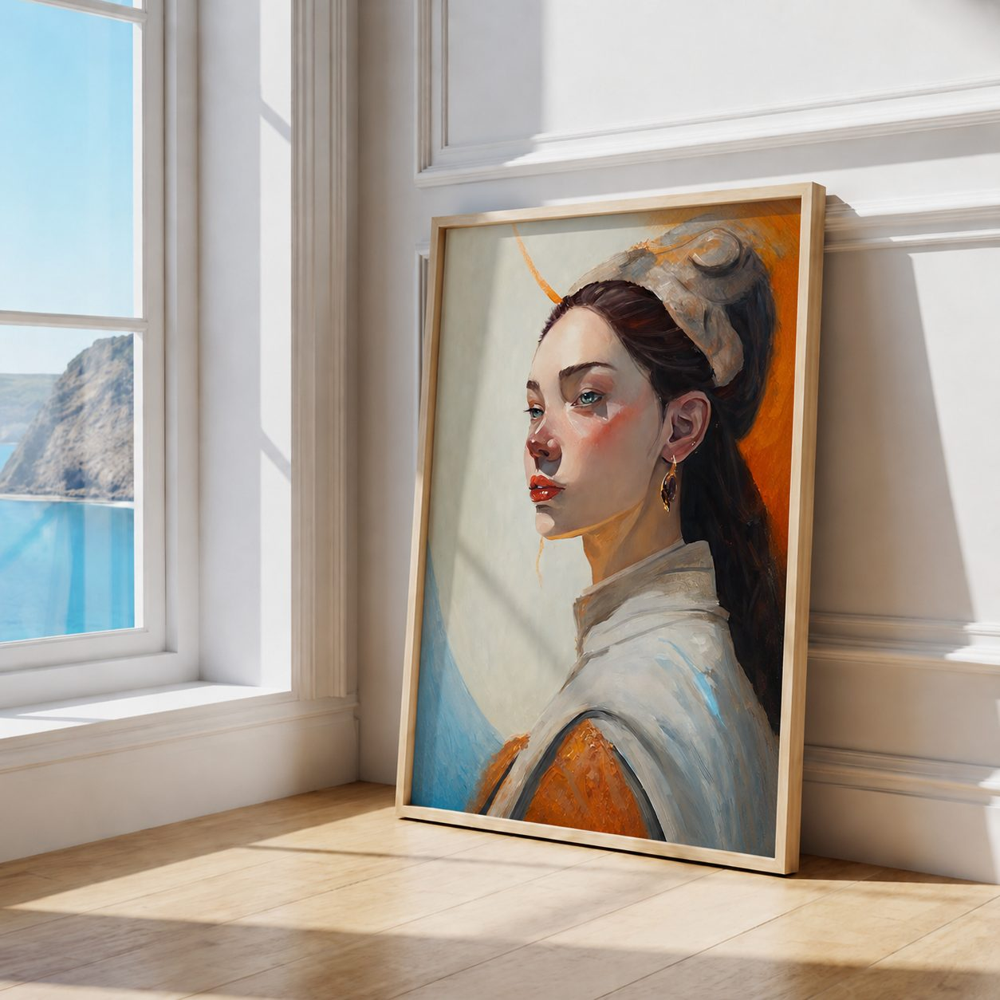
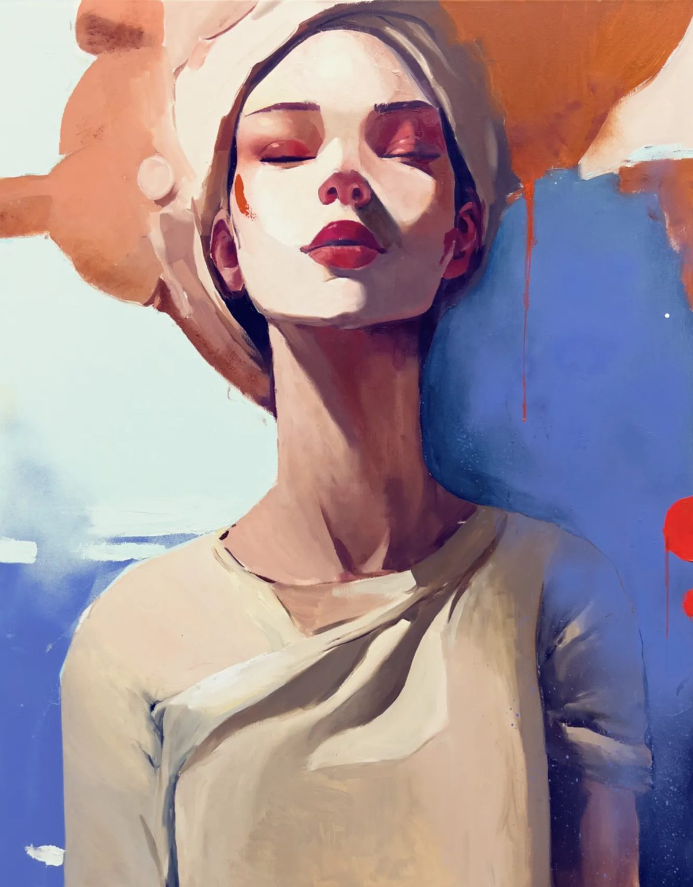
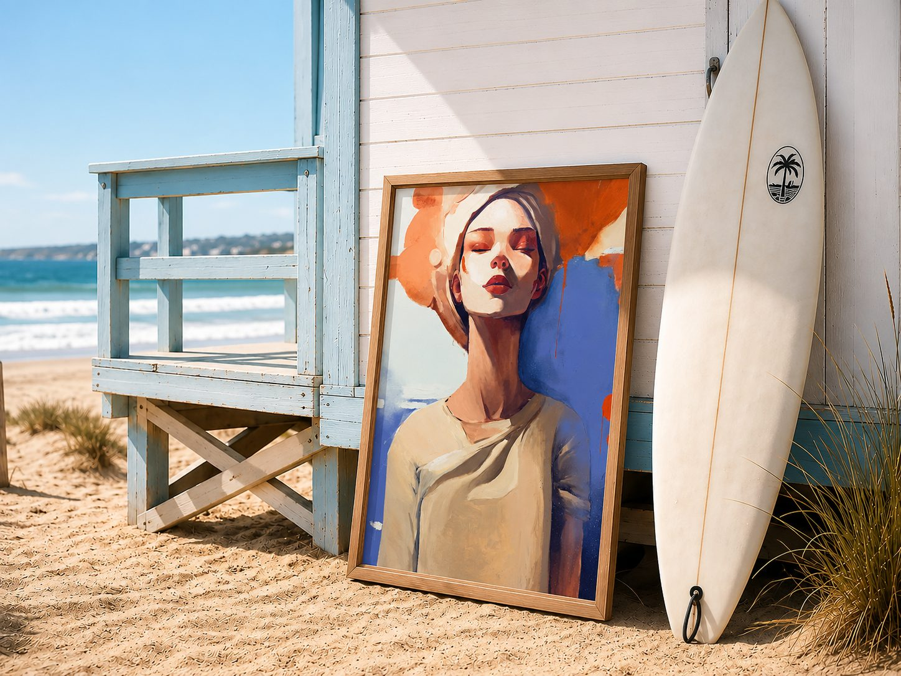
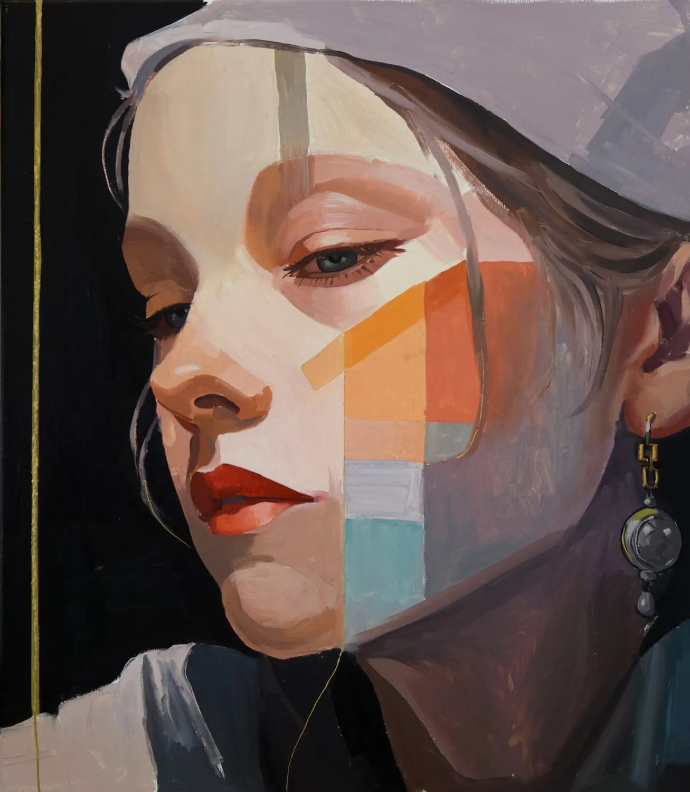
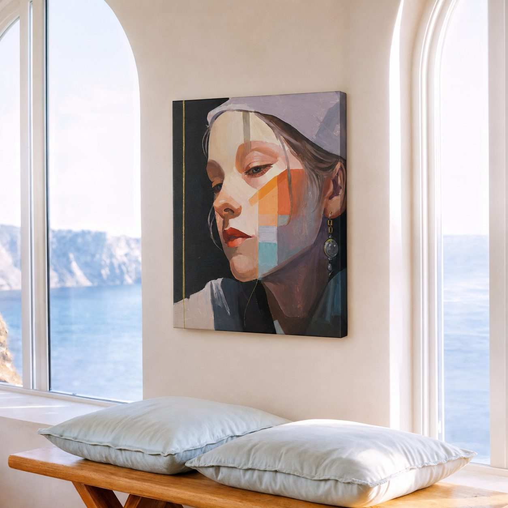
The artist
I paint the quiet dialogue between the world outside and the world within.
In portraits and figures, I seek the essence of human presence — capturing emotion, character, and the silent stories behind every face.
In landscapes, I explore nature as a reflection of lived moments, where light, space, and memory meet.
Across nature, people, and abstraction, my work is a journey — an exploration of connection, emotion, and the poetry that exists between reality and imagination.
“Painting, for me, is not only an act of creation. It is a way of listening to life.”
— Ani Muradyan
Porte de Versailles · Paris, France
Artists Union of Armenia · Yerevan, Armenia
Gaudi Gallery · Madrid, Spain
World of Crete · Thessaloniki, Greece
Artists Union of Armenia · Yerevan, Armenia
Pyunik Development Center · Yerevan, Armenia
Yerevan, Armenia
Yerevan, Armenia
Commissions, exhibitions & original works — always open to a conversation.